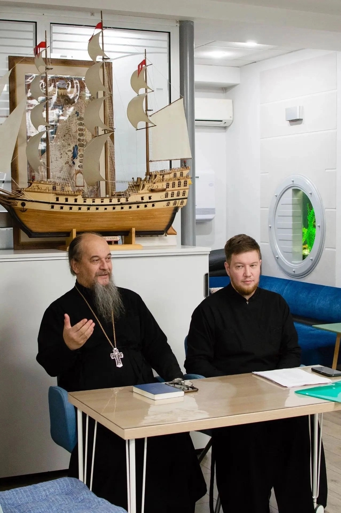
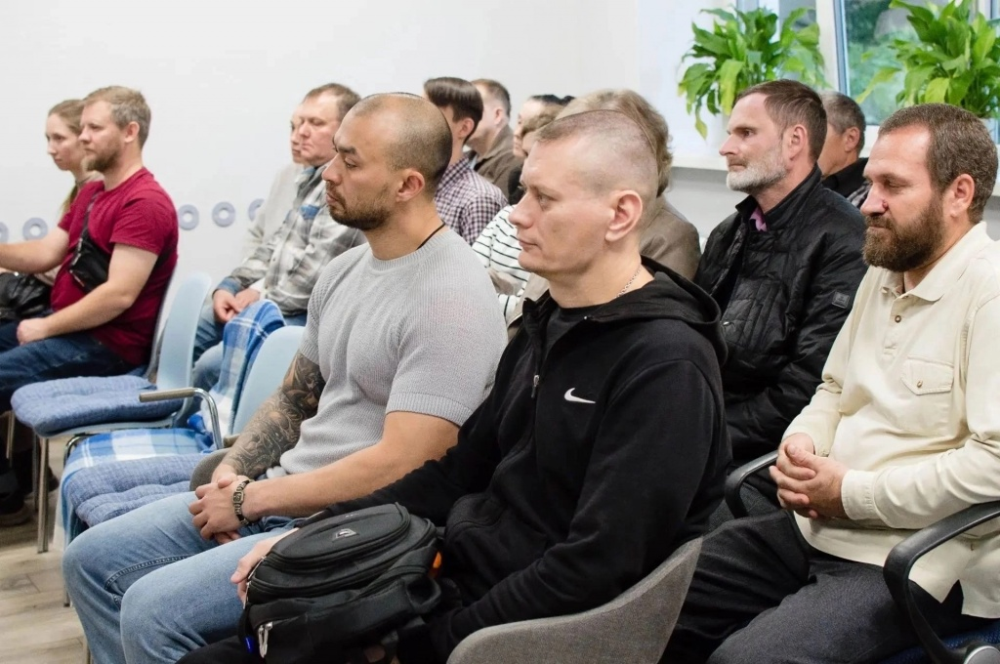
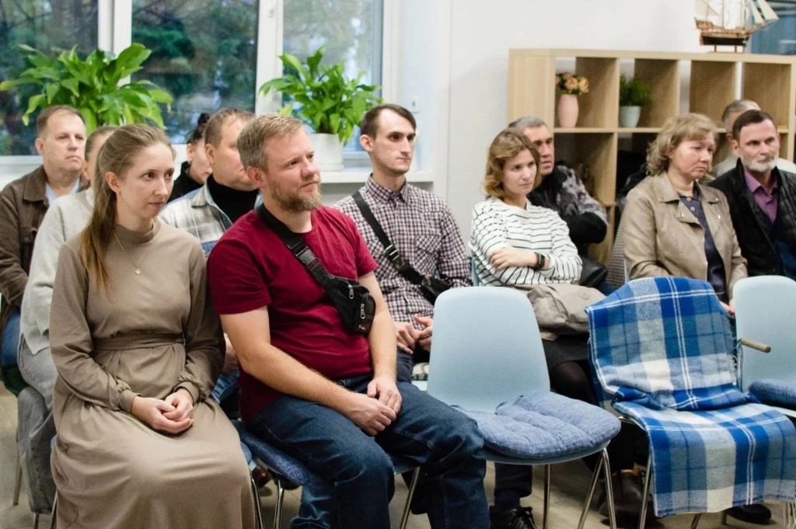

В духовно-просветительском центре «София» при Новосибирской православной духовной семинарии состоялась первая встреча участников нового образовательного проекта.
В духовно-просветительском центре «София» при Новосибирской православной духовной семинарии состоялась первая встреча участников нового образовательного проекта.
Среди участников — семейные пары, а также те, кто готовится к будущей семейной жизни. На первой встрече они познакомились друг с другом и узнали о программе предстоящих занятий.
Участников приветствовали ректор семинарии протоиерей Павел Кизюн и проректор по учебной работе диакон Никита Двинянинов. В организации первой встречи участвовала руководитель центра «София» Валентина Двинянинова.
Школа открылась по благословению митрополита Новосибирского и Бердского Варфоломея. Проект реализуется центром «София» совместно с Сибирским обществом православных психологов во имя святителя Феофана Затворника.
В программе — встречи со священниками и православными психологами. Участники будут говорить о христианском понимании брака, отношениях супругов, воспитании детей, семейных кризисах и других вопросах.
Первая встреча стала началом шестимесячного курса. Впереди — интересная и содержательная работа, новые встречи и возможность вместе глубже разобраться в том, что помогает сохранять и укреплять семейные отношения.

